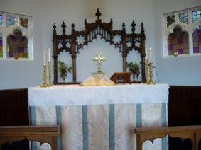

History
St Margaret’s was built in 1896 and has continued to play its own unique part in the religious and community life of the lcoal area ever since then.
St Margaret’s is a very fine and unusual late Victorian building of buttressed facing brick.
The church was designed by the eminent Dundonian architect T. Martin Cappon (1863-1939) and is a Grade C (S) listed building.
For further architectural details see: St_Margarets_history.pdf
Information about St Margarets Choir Boys
